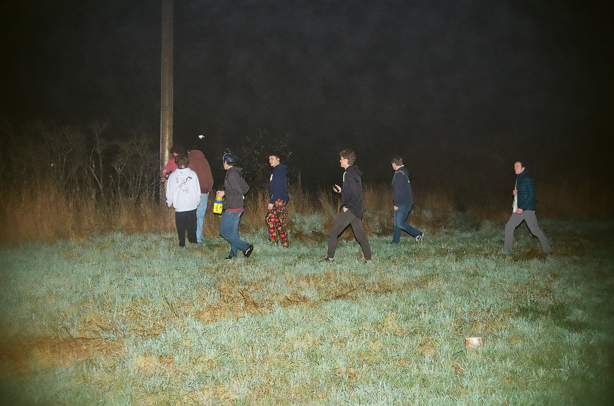
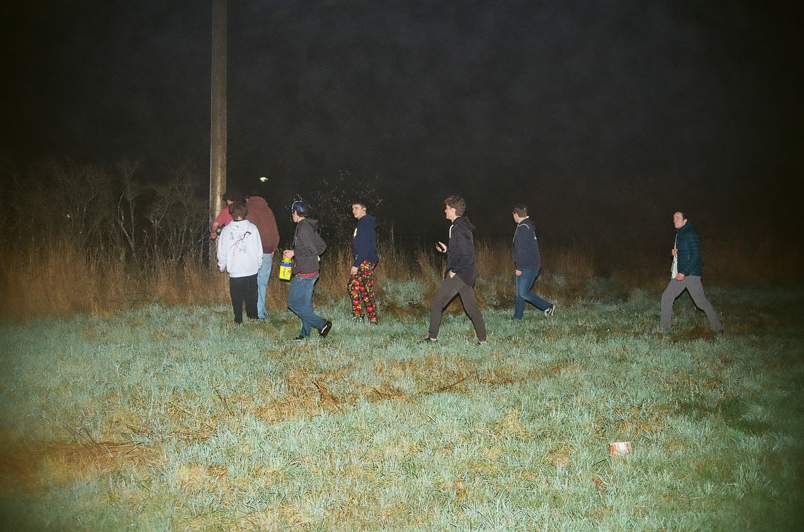
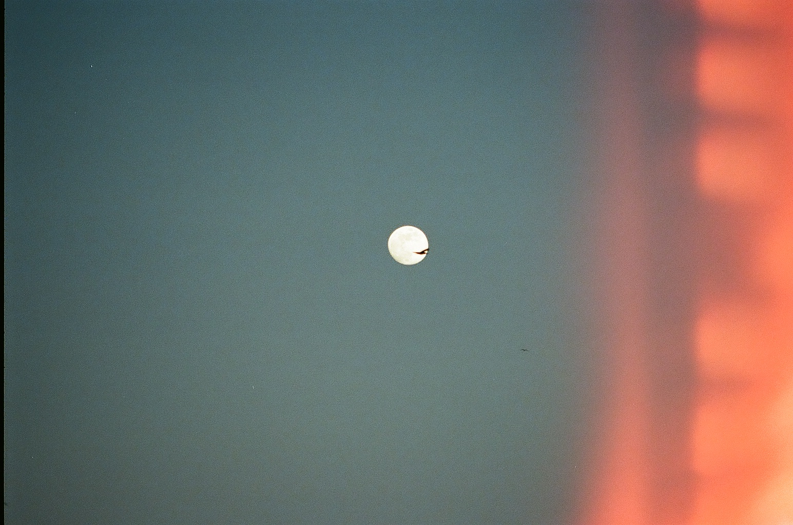
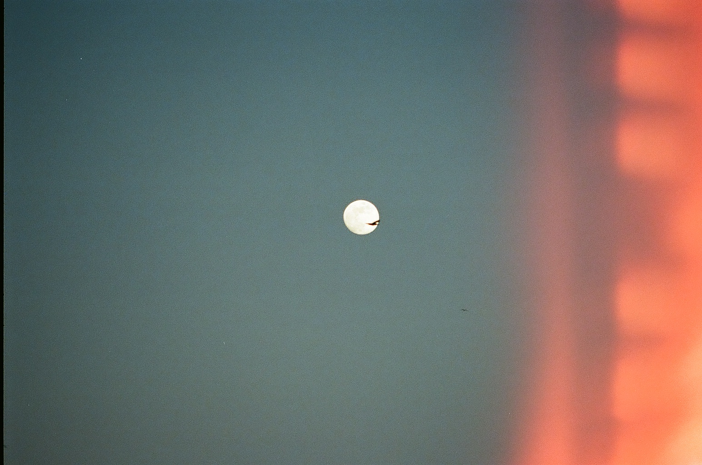
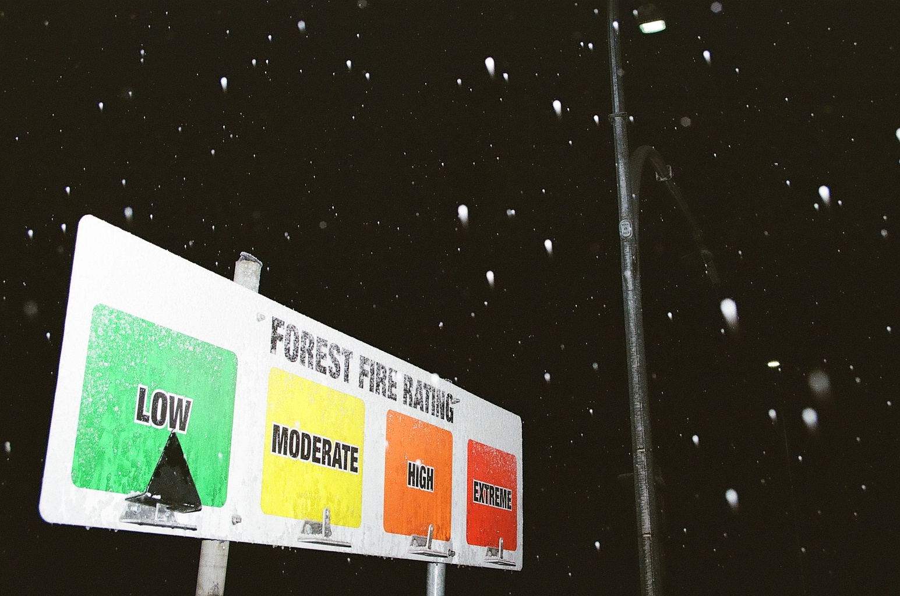
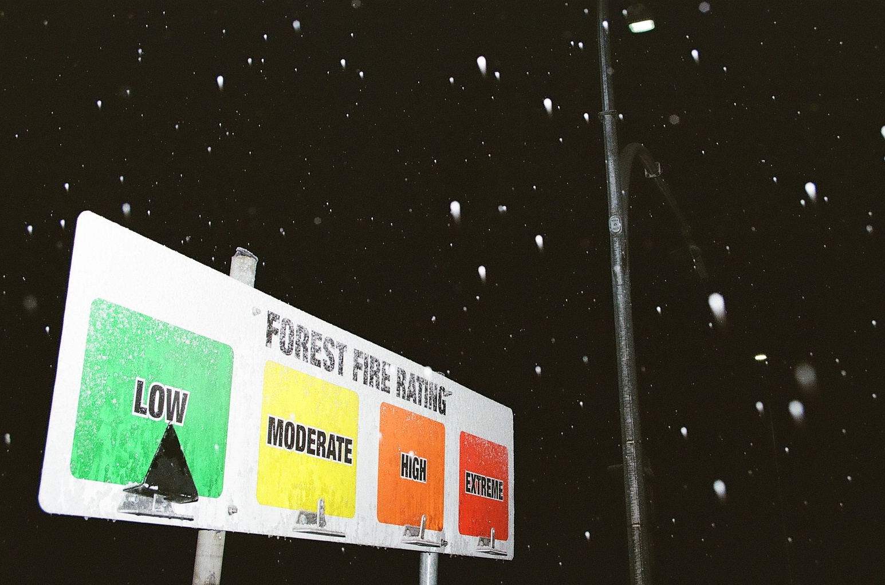
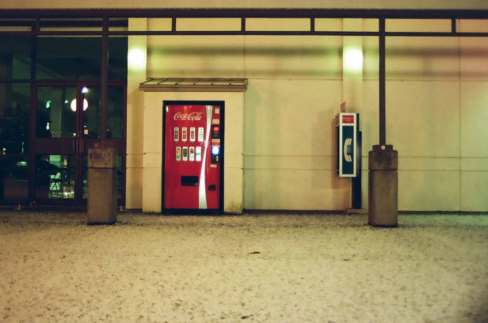
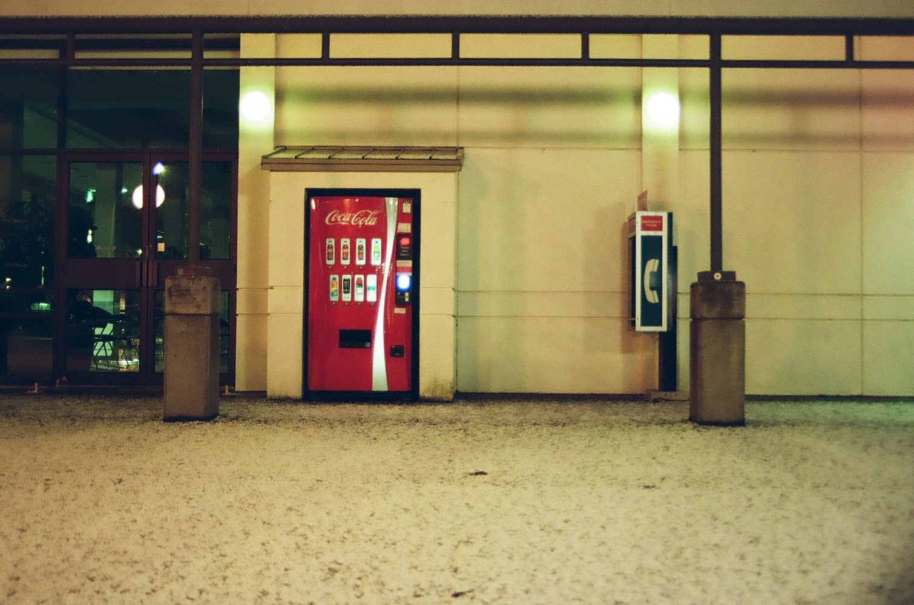

Last updated May 11.I was kind of an idiot and uploaded really high quality versions of some of these, which makes them take an eternity to load and eats up your data plan if you're not on wi-fi. I will fix this when I'm motivated (not soon).
Harman Phoenix 200 (shot at 100)
Sorry for the sub-par colours and scanning job. I will fix it eventually.


Fuji 400
These are just the ones I got lab scans of. I will scan the others eventually.


 



 



 

 

T-MAX 400 (expired 2013) and Ilford HP5
Some of the T-MAX was shot at 400 ISO, others at 200. Can't remember which. Some of the Vancouver photos in the mix below are from the HP5, which was bought new. Both seem pretty similar but I'm sure would be more visibly different with better scans.


Ilford XP2 400
Lab scans.


Canon EOS Rebel XT (digital)
Surprised how good these look since the camera is over 20 years old. After getting used to film it feels like cheating. Colour grading does the heavy lifting of course.